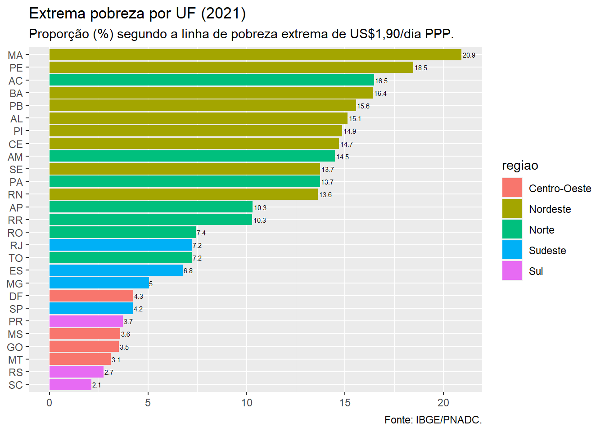
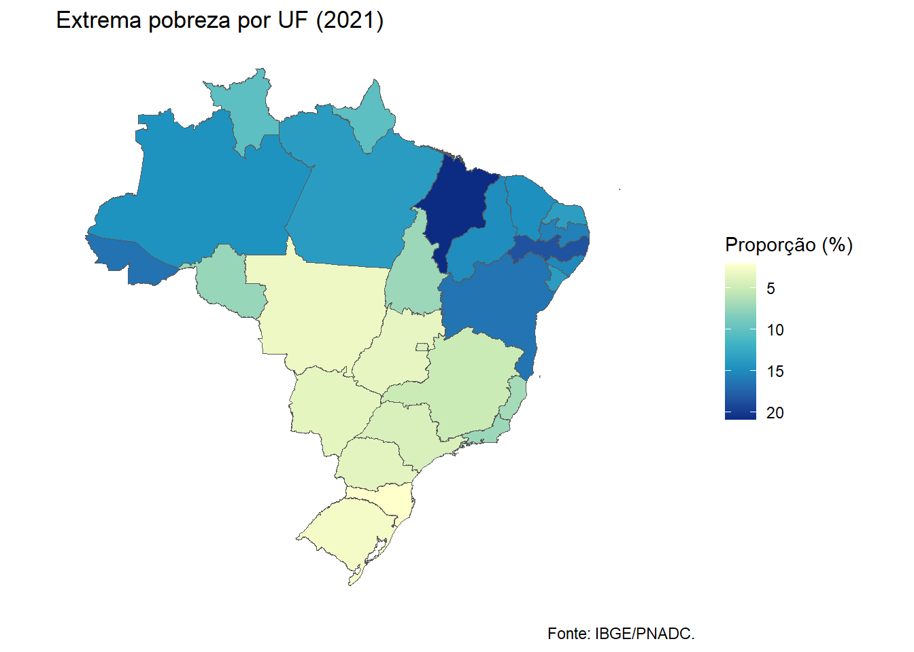

| Prop(%) | |
|---|---|
| Norte | 12.6 |
| Nordeste | 16.5 |
| Sudeste | 5.1 |
| Sul | 3.0 |
| Centro-Oeste | 3.6 |
| Note: | |
| Fonte: IBGE/PNADC. |
Primeira postagem
Nesta primeira postagem eu não poderia escolher outro tema. Nos últimos anos me dediquei muito ao cálculo e análise de indicadores de pobreza, seja em pesquisas acadêmicas, trabalhos técnicos ou como consultor.
Neste texto estarei fazendo referência à pobreza monetária que, sem me alongar muito na definição, pode ser caracterizada pela insuficiência de renda de um indivíduo ou família em relação à um nível mínimo, considerado adequado para garantir a satisfação de necessidades básicas.
Infelizmente temas relacionados com a pobreza ainda são bastante presentes. Os indicadores de pobreza monetária publicados pelo Instituto Brasileiro de Geografia e Estatística (IBGE) nos últimos anos mostram o quanto o tema ainda é relevante.
Em momentos recessivos, como o de 2015 e 2016, foi possível verificar os reflexos da situação no mercado de trabalho e da redução da renda sobre os indicadores de pobreza. Em 2020, no cenário de pandemia de Covid-19, foi possível calcular indicadores de renda e pobreza para verificar o impacto das tranferências do Auxílio Emergencial em 2020 e o resultado da descontinuidade delas em 2021.
Os indicadores de pobreza monetária são um mero reflexo do que acontece com a renda das famílias. Nesse sentido, a situação de pobreza de uma pessoa ou família reflete a sua capacidade de auferir renda, seja no mercado de trabalho, como retorno de ativos ou mesmo sendo beneficiada por uma política social. Os determinantes dessa capacidade são diversos, podendo estar associados à características individuais (como escolaridade) e ao contexto em que estas pessoas e famílias se encontram.
Um dos aspectos contextuais mais citados como determinante da situação de pobreza é o local onde as pessoas e famílias vivem. O Brasil é um país marcado por forte heterogeneidade regional, sendo caracterizado na década de 1970 como uma “Belindia” (uma grande Índia pobre coexistindo com uma pequena Bélgica rica). Mesmo existindo uma redução de disparidades em muitos indicadores sociais nas últimas décadas, a desigualdade regionais ainda é muito evidente e podemos verificar o quanto este aspecto é determinante para a situação de insuficiência de renda e se traduz no indicador de pobreza.
O objetivo desta postagem é bastante singelo, apresentar uma evidência sobre as desigualdades regionais de incidência de pobreza. Para fazer isso escolhi o indicador de proporção de pessoas em extrema pobreza. Os dados utilizados são provenientes da Pesquisa Nacional por Amostra de Domicílios Contínua (PNADC) levada a campo em 2021.
Indicadores de extrema pobreza por UF
O cálculo de um indicador de pobreza deve envolver uma estratégia de identificação e uma de agregação. Como mencionado acima, realizei o cálculo do indicador de extrema pobreza monetária identificando pessoas/famílias pobres com base na linha de pobreza sugerida pelo Banco Mundial. Essa linha adota um valor de referência de US$1,90 por dia (em termos da Paridade de Poder de Compra, a preços internacionais de 2011, e corrigidos para preços de 2021 pelo IPCA). Por sua vez, a agregação considera o indicador de incidência de pobreza dado pela formulação de Foster, Greer e Thorbecke (1984). 1 O cálculo foi realizado com o pacote convey. 2
A tabela abaixo mostra a proporção de pessoas em situação de extrema pobreza em cada região. Temos uma evidência clara da maior proporção na região Nordeste (16,5%), seguida da região Norte (12,6%). Enquanto isso, na região Sul menos de 3% da população é classificada dessa forma.
Apresentando uma informação mais detalhada, o gráfico a seguir torna ainda mais evidente a maior incidência de famílias em situação de extrema pobreza nos estados das regiões Norte e Nordeste, principalmente nesta segunda. Os estados do Maranhão e de Pernambuco são os que apresentam os maiores indicadores de pobreza.
No outro extremo, as menores taxas são observadas nos estados das regiões Sul e Centro-Oeste, com destaque para os indicadores dos estados de Santa Catarina e Rio Grande do Sul.

De forma complementar, empreguei os pacotes geobr e sf para construir uma mapa destacando a desigualdade regional brasileira.
Using year 2010
Considerações finais
Apesar de ser apresentada em uma postagem breve, essa evidência sobre a desigualdades regional no Brasil é bastante relevante e merece aprofundamentos em análises futuras. Ao visualizar estas primeiras informações diversas questões e hipóteses podem ser formuladas.
De que forma a dinâmica do mercado de trabalho em cada região contribui para este resultado?
Como este resultado também é afetado pelas políticas de tranferências de renda?
Mudanças na composição de capital humano, principalmente relacionados à educação formal, contribuiram para reduzir estas desigualdades?
A estrutura produtiva de cada região importa? As políticas de desenvolvimento regional nas últimas décadas tiveram algum impacto?
Bom, estes são apenas alguns exemplos de questões que podem ser formuladas e podem ser exploradas em postagens futuras.
Footnotes
Foster, James, Joel Greer, and Erik Thorbecke. 1984. “A Class of Decomposable Poverty Measures.” Econometrica 52 (3): 761–66.↩︎
Jacob G, Pessoa D, Damico A (2022). “Poverty and Inequality with Complex Survey Data.” Auxiliary information about the usage of the R convey package, https://guilhermejacob.github.io/context/.↩︎
Citation
BibTeX citation:
@online{hugomiro2023,
author = {Vitor Hugo Miro and Vitor Hugo Miro},
title = {Uma Evidência Sobre a Distribuição Regional Da Pobreza No
{Brasil} (2021)},
date = {2023-01-06},
url = {https://vitormiro.github.io/posts/2023_01_06_poverty_by_uf_2021/},
langid = {en}
}
For attribution, please cite this work as:
Vitor Hugo Miro, and Vitor Hugo Miro. 2023. “Uma Evidência Sobre a
Distribuição Regional Da Pobreza No Brasil (2021).” January 6,
2023. https://vitormiro.github.io/posts/2023_01_06_poverty_by_uf_2021/.